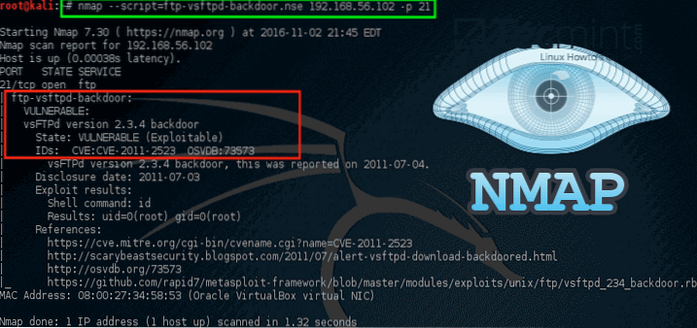

Nmap
Nmap, short for Network Mapper, is an open-source Linux command-line tool that is used to scan IP addresses and ports in a network and to detect installed applications. It was created back in 1997 by Gordon Lyon and is still one of the most widely used tools by pen-testers . for reference of nmap comands visit https://linux.die.net/man/1/nmap
$ nmap [ Scan Type ...] [ Options ] { target specification }
#Examples
$ nmap [ip] #Gives all the ports open and on the specified ip
$ nmap -p [port] [ip] #Gives information on the specififed port
$ nmap -A [ip] #Identifies the OS of the specified ip